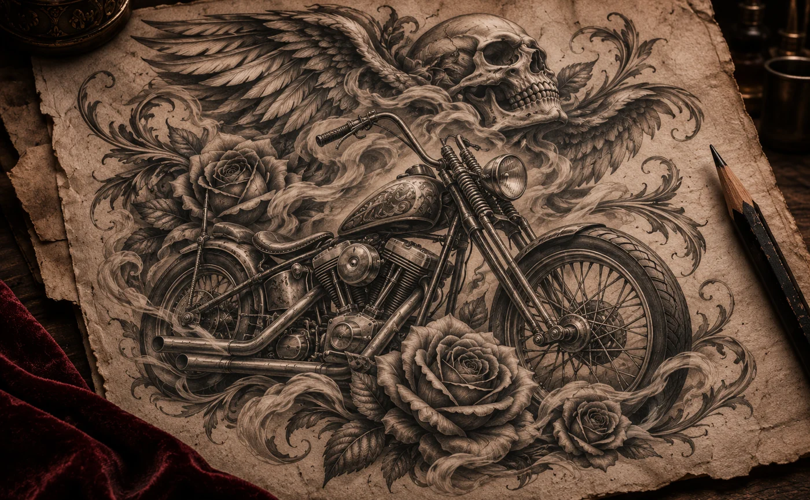

01 · Le tracé
L'image se dévoile de gauche à droite comme un trait qui la dessine. Le plus lié au geste du tatoueur.
Bloodline Tattoo · Aperçu séparé
Ces essais ne changent pas le site vitrine. Clique sur « Revoir l'effet » pour comparer les animations autant de fois que tu veux.

L'image se dévoile de gauche à droite comme un trait qui la dessine. Le plus lié au geste du tatoueur.
Le dessin apparaît depuis une version sombre et presque sans couleur. Plus mystérieux et cinématographique.
L'image passe d'un cadrage serré et flou à un dessin net. Le plus sobre pour les photos du salon.
Durée : environ une seconde par effet. Les mouvements sont coupés si « réduire les animations » est activé.